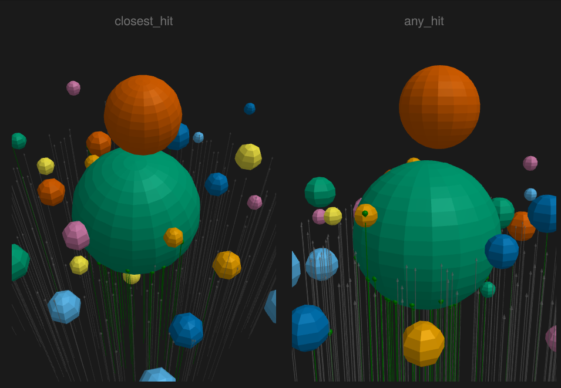
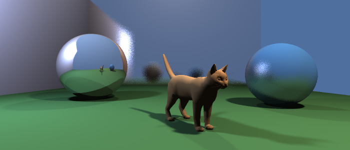
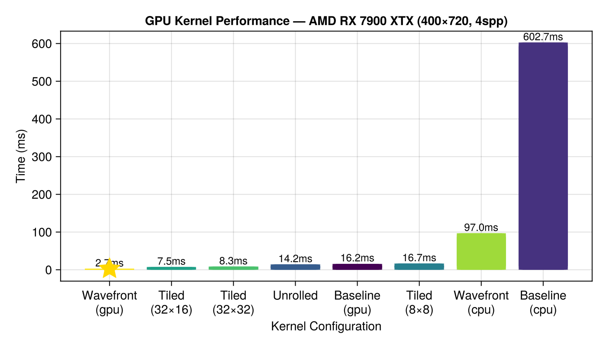
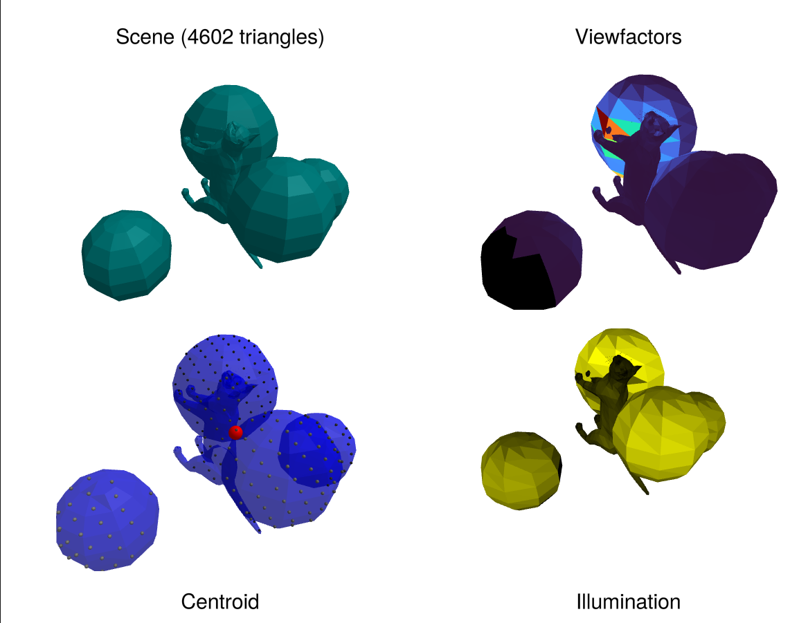

Raycore.jl
High-performance ray-triangle intersection engine with TLAS/BLAS acceleration for CPU and GPU.
Features
- Fast TLAS/BLAS acceleration for ray-triangle intersection
- CPU and GPU support via KernelAbstractions.jl
- MultiTypeSet: GPU-safe heterogeneous collections with compile-time type-stable dispatch for materials, textures, lights, etc.
- GPU TLAS:
Raycore.TLASis software, backend-agnostic (any KA backend). For hardware ray tracing on Vulkan and Metal, useMantle.HWTLAS, a drop-inAbstractAccel. See Hardware Ray Tracing with Mantle. - Analysis tools: centroid calculation, illumination analysis, view factors for radiosity
- Makie integration for visualization
Interactive Examples
Hit Tests & Basics
Learn the basics of ray-triangle intersection, TLAS construction, and visualization.

Ray Tracing Tutorial
Build a complete ray tracer from scratch with shadows, materials, reflections, and tone mapping.

GPU Ray Tracing Tutorial
Port the ray tracer to the GPU with KernelAbstractions.jl. Learn about kernel optimization, loop unrolling, tiling, and wavefront rendering.

Hardware RT Acceleration
Use dedicated GPU ray tracing hardware (RT cores / Ray Accelerators) for transparent BVH acceleration via Vulkan and Metal.
Hardware Ray Tracing with Mantle
View Factors Analysis
Calculate view factors, illumination, and centroids for radiosity and thermal analysis.

Overview
Raycore.AbstractAccel — Type
AbstractAccelMutable acceleration structure for ray/geometry intersection queries.
Concrete implementations:
Raycore.TLAS— software BVH/TLAS, runs on any KernelAbstractions backend.Mantle.HWTLAS— the GPU's hardware acceleration structure, on Vulkan and Metal.
Mutation API
push!(accel, mesh, transform): add geometry, return aTLASHandle.delete!(accel, handle),update_transforms!(accel, handle, transforms),set_visible!(accel, handle, visible),set_opaque!(accel, handle, opaque).instancecount(accel, handle)andinstanceranges(accel), on whichupdate_transform!(accel, handle, transform)andupdate_instance_transforms!(accel, transforms, n, first)are written once. An unknown or deleted handle is anArgumentErroreverywhere.
Lifecycle
sync!(accel)— sole owner ofaccel.static_tlas. Rebuilds in place where possible; reassigns when a buffer had to grow. No-op on a clean accel. Does NOT block the CPU on a GPU fence; backend-internal timeline tracking handles the "still in flight" case.Adapt.adapt(backend, accel) === accel.static_tlasbetweensync!s. Consumers re-readaccel.static_tlas(or callAdapt.adapt) per dispatch. Caching the adapted form across mutations is a contract violation.
Query
closest_hit_record(adapted, ray, mask = 0xff) -> HitRecordandany_hit_record(adapted, ray, mask = 0xff) -> HitRecord: what every adapted structure implements, withhit_primitive(adapted, rec)andmiss_primitive(adapted). AHitRecordis small enough to queue and expand later.transparent_hits(adapted, ray, mask, Val(N), limit) -> TransparentHits{N}: the nearestNhits on instances that are not opaque, until an opaque one blocks the ray. Closest and any hits take every instance as opaque.closest_hit(adapted, ray, mask = 0xff) -> (hit, tri, t, bary, instance_id)any_hit(adapted, ray, mask = 0xff) -> (hit, tri, t, bary, instance_id)— the SAME shape asclosest_hit, not aBool. Only the traversal differs: it stops at the first accepted hit, sot/triare an intersection, not the nearest. Both are derived from the records once, for every structure.maskis the ray's cull mask: an instance is seen only when its mask (instance_maskatpush!, or the record'smask) shares a bit with it. Low 8 bits, on every implementation.- The hit means the same on every implementation:
triis the hit triangle in world space (moved by its instance's transform),instance_idthe instance's custom index (instance_idatpush!, or the record'sid), low 24 bits; the empty triangle and0on a miss. world_bound(accel),n_instances(accel),n_geometries(accel).
Instances a kernel writes
instance_buffer(accel, handle)— the batch'sInstanceRecords, a device array a kernel may write;refit!(accel)commits what it wrote.
Flush
wait_for_gpu!(accel)— block CPU until all pending GPU work on this accel's queue has completed. Convenience for tear-down and benchmark isolation. Not part of the hot path.
Raycore.BLAS — Type
BLAS{NodeArray, TriArray}Bottom-Level Acceleration Structure - BVH over triangle geometry.
Type parameters allow CPU (Vector) or GPU (CuArray, ROCArray) storage.
Raycore.BLAS4 — Type
BLAS4{NodeArray, TriArray}Bottom-Level Acceleration Structure using BVH4 nodes.
Raycore.BLASDescriptor — Type
BLASDescriptorLightweight descriptor for a BLAS in flat-array layout. Instead of storing device pointers to per-BLAS arrays (which fail on Metal when stored in GPU buffers), this stores offsets into concatenated flat arrays.
Fields:
nodes_offset: 0-based offset into the flat allblasnodes arrayprimitives_offset: 0-based offset into the flat allblasprims arrayroot_aabb: Bounding box of the BLAS in local space
Raycore.BVHNode2 — Type
BVHNode2Compact BVH node for two-child binary trees. Stores AABBs for both children inline (BVH2IL layout from RadeonRays).
Fields:
aabb0_min,aabb0_max: Child 0 bounding box (or vertex data for leaves)aabb1_min,aabb1_max: Child 1 bounding box (or unused for leaves)child0: Child 0 index (INVALID_NODE for leaves)child1: Child 1 index (or primitive index for leaves)parent: Parent node index
Raycore.BVHNode4 — Type
BVHNode44-wide BVH node optimized for GPU traversal. Stores up to 4 children with their AABBs inline.
Memory layout: 128 bytes (one cache line on most GPUs)
- 4 child indices: 16 bytes
- 4 AABBs: 96 bytes (24 bytes each)
- Metadata: 16 bytes
Leaf nodes indicated by child_count == 0 and first primitive index in child0.
Raycore.CollisionResult — Type
CollisionResult{C, B}Result of collision detection, containing contact pairs and a reusable cache buffer.
Fields:
contacts: Vector ofContactPair(or similar) on the compute backendnum_contacts: Number of valid contactscache: Internal buffer for reuse across frames viacachekeyword
Raycore.ContactPair — Type
ContactPairA pair of contacting instances in a TLAS, identified by their 1-based instance indices.
Raycore.FastClosure — Type
FastClosure{F, Args<:Tuple}A callable wrapper that validates a function and arguments are GPU-safe:
- Function
fhas no captured variables (noCore.Boxfields) - Arguments don't exceed compiler limits (tuple length, type depth)
When called, appends stored args to the call: fc(x) == fc.f(x, fc.args...)
This is used internally by for_unrolled, map_unrolled, and reduce_unrolled.
Raycore.HitRecord — Type
HitRecordWhat closest_hit_record and any_hit_record found, small enough to keep in a queue and expand later with hit_primitive.
kind is HIT_MISS, HIT_TRIANGLE or HIT_GENERATED (an intersection a procedural payload committed). t is the hit's distance along the ray. For a triangle a[1] and a[2] are the barycentrics of its second and third vertex; for a generated hit a is the payload's running best, packed. instance is the instance's index in build order and primitive the primitive's index in its BLAS, both 0-based; custom is the instance's custom index (instance_id at push!, the record's id), low 24 bits.
Raycore.InstanceDescriptor — Type
InstanceDescriptorDescribes an instance of a bottom-level BVH in world space.
Fields:
blas_index: Index into BLAS arrayinstance_id: the instance's custom index, whichclosest_hit/any_hitreturn as their 5th value, its low 24 bits, as the hardware structures do (Vulkan'sgl_InstanceCustomIndexEXTis 24 bits wide). Hikari uses it as amedium_interface_idxoverride,0meaning "inherit from the triangle's per-face metadata", so N instances of one BLAS can have distinct materials / media / emission without duplicating the BLAS geometry.transform: Local-to-world transform (Vulkan row-major 3×4,Mat3x4f)inv_transform: World-to-local transform (Vulkan row-major 3×4,Mat3x4f)flags: Instance flags.INSTANCE_HIDDENkeeps the instance out of every ray's way (set_visible!);INSTANCE_NON_OPAQUEmakestransparent_hitsrecord its hits instead of stopping at them (opaqueatpush!,set_opaque!); the other bits are reserved.mask: the instance's cull mask. A ray traced with maskmsees the instance only whenmask & m != 0; seeclosest_hit. Only the low 8 bits count, as on the hardware structures. The 5-argument constructor gives0xff, which every ray sees.
Raycore.InstanceRecord — Type
InstanceRecord(transform, id, mask)One instance of a geometry in a top-level structure, in the form a kernel writes it: the array instance_buffer returns holds these, and refit! is what makes the structure take what was written. The same on Raycore.TLAS and on the hardware structures.
transform: object to world, aMat3x4f(aMat4fis converted).id: the instance's custom index, whichclosest_hitandany_hitreturn as their fifth value. The low 24 bits count (Vulkan'sinstanceCustomIndexis 24 bits wide).mask: the cull mask; a ray traced with maskmsees the instance only whenmask & m != 0. The low 8 bits count.
The same type on every backend. Which geometry a record instances is not in it: every record of a batch instances the geometry the batch was pushed with, and the structure writes its own descriptor from that (an InstanceDescriptor on Raycore.TLAS, a device address on Vulkan, an index on Metal).
Raycore.MultiTypeSet — Type
MultiTypeSet(backend)Mutable heterogeneous vector that builds GPU-ready structures on each push!. Takes a KernelAbstractions backend at construction.
Example
backend = OpenCL.OpenCLBackend()
dhv = MultiTypeSet(backend)
texture = rand(Float32, 20, 20)
idx1 = push!(dhv, MatteMaterial(texture))
idx2 = push!(dhv, GlassMaterial(1.5f0))
# Access the GPU-ready StaticMultiTypeSet directly
gpu_smv = dhv.static # Always up-to-date, no adapt neededPush converts arrays to TextureRefs and stores texture data as GPU arrays. The static field is rebuilt on each push to stay up-to-date.
Raycore.RTHitResult — Type
RTHitResultRay hit output from hardware RT dispatch. 32 bytes.
instance_custom_index— value ofgl_InstanceCustomIndexEXTat the hit. Under the current semantics this carries theInstanceDescriptor.instance_id(the interface-override slot).0means "inherit from triangle metadata".instance_id— value ofgl_InstanceIDat the hit (0-based instance array position). Used by the caller to look up per-instance data such as the BLAS triangle offset.
Raycore.RTRay — Type
RTRayRay input for hardware RT dispatch. 32 bytes, matches Vulkan/Metal layout.
Raycore.SetKey — Type
SetKeyIndex into a heterogeneous vector, encoding both which type slot (1-based) and the index within that type's array.
type_idx: Which tuple slot (1-based), 0 = invalid/constant sentinelvec_idx: 1-based index within the vector at that slot
Raycore.SetView — Type
SetView{DataSlots, TextureSlots}Some of the slots of a StaticMultiTypeSet: the data slots numbered DataSlots and the texture slots numbered TextureSlots (tuples of the set's own slot numbers), so a SetKey and a texture's (slot, idx) mean what they mean in the set. with_index and with_texture call f(nothing, args...) for a slot the view does not hold.
A kernel that reads a few of a set's slots takes a view of those: its type then names those slots only, and a slot added to the set for something else leaves it, and the kernel compiled for it, as they were. Take one with setview.
Raycore.StaticMultiTypeSet — Type
StaticMultiTypeSet{Data, Textures}Immutable heterogeneous collection with separate texture storage.
data: Tuple of GPU vectors for materials/objectstextures: Tuple of GPU vectors containing isbits device pointers
Raycore.StaticTLAS — Type
StaticTLAS{NodeArray, InstArray, BLASNodeArray, BLASPrimArray, DescArray}Immutable Top-Level Acceleration Structure for GPU kernel traversal. This is what Adapt.adapt_structure returns from a TLAS.
Uses flat arrays with offset-based indexing instead of per-BLAS pointer arrays. This avoids the Metal issue where device pointers stored in GPU buffers cannot be reliably dereferenced by kernels.
The struct is immutable and contains only the arrays needed for ray traversal. No management state (dictionaries, free lists, etc.) - those stay on CPU in TLAS.
Raycore.TLAS — Type
TLAS{Backend}Mutable Top-Level Acceleration Structure with direct GPU arrays.
GPU-first design: instances are appended directly to GPU array using efficient GPU append. CPU-side dictionary provides O(1) handle lookups.
Adapted-form invariant (READ THIS)
sync!(tlas) is the single owner of the GPU-adapted form. It rebuilds as efficiently as possible — in place via resize!/copyto! where the backing buffer can be reused, freshly allocated only when a buffer grew — and stores the result in tlas.static_tlas. sync! MAY reassign tlas.static_tlas = new_static_tlas when a buffer was reallocated.
Every consumer that hands an accel to a raytracing kernel MUST go through tlas.static_tlas or Adapt.adapt(backend, tlas) (which reads / refreshes tlas.static_tlas) per dispatch. Those are cheap; sync! did the heavy lifting. NEVER cache the StaticTLAS returned by adapt across mutations — after a reshape-driven reallocation the cached snapshot holds a stale device pointer.
The same contract applies to HWTLAS — see its docstring.
Type Parameters
Backend: KernelAbstractions backend (CPU(), LavaBackend(), CUDABackend(), etc.)
Fields
backend: KernelAbstractions backend for kernelsnodes: BVH nodes array (on backend, grown in place on sync! where possible)instances: Instance descriptors array (GPU array, direct append)blas_array: BLAS objects array (GPU array with isbits pointers)root_aabb: World-space bounding boxhandle_to_range: Handle -> range in instances array (CPU-side)deleted_handles: Handles deleted but not yet compacted (CPU-side)records: Handle -> the batch'sInstanceRecords, a backend array a kernel may write (instance_buffer);refit!copies them intoinstances. Live handles only.blas_storage: Per-BLAS backing arrays; keeps GPU buffers alive for isbits pointersstatic_tlas: GPU-adapted form, owned bysync!. Consumers read this, do not cache it across mutations.dirty: Whether BVH topology needs rebuildtransforms_dirty: Whether instance transforms changed and the TLAS needs refitrevision: Monotonic counter bumped by every mutation that reshapes GPU-visible arrays. Intended purely as a diagnostic signal — consumers that go throughtlas.static_tlasdon't need to check it.
Usage
tlas = TLAS(CPU())
h1 = push!(tlas, mesh)
h2 = push!(tlas, mesh, transforms)
update_transform!(tlas, h2, new_transform)
delete!(tlas, h1)
sync!(tlas) # Rebuild / refresh tlas.static_tlas
static = adapt(backend, tlas) # Reads tlas.static_tlas — cheap, call per dispatchRaycore.TLAS — Method
TLAS(meshes::AbstractVector{<:GeometryBasics.Mesh}; backend=KA.CPU()) -> (TLAS, Vector{TLASHandle})Create a mutable TLAS from a vector of GB.Mesh objects. Each mesh becomes a BLAS with a single instance at identity transform.
Returns the mutable TLAS and a vector of TLASHandles for later reference.
Examples
tlas, handles = TLAS([floor_mesh, wall_mesh, sphere_mesh])Raycore.TLAS — Method
TLAS(backend; primtype = Triangle{UInt32}) -> TLASCreate an empty TLAS for the given backend. Use push! to add geometries/instances, then sync! to rebuild the BVH. Adapt.adapt_structure returns a StaticTLAS for kernel traversal.
primtype is the primitive type the structure holds while it holds nothing: pass the Triangle{Meta} your pushes will carry, so an empty scene and a populated one compile to the same kernel.
Example
tlas = TLAS(OpenCLBackend())
h1 = push!(tlas, geometry)
h2 = push!(tlas, Instance(geometry, transforms))
sync!(tlas) # Rebuild BVH on backend
static = adapt(backend, tlas) # StaticTLAS with isbits pointers for kernelsRaycore.TLAS — Method
TLAS(primitives::AbstractVector, metadata_fn::Function; backend=KA.CPU())Universal TLAS constructor. Each primitive (GB.Mesh or AbstractGeometry) becomes a BLAS with a single instance.
Each mesh is automatically treated as an instance at identity transform. Perfect for scenes where you just have different meshes and want automatic instancing.
GPU-first: Specify backend to build all BLASes directly on GPU.
Example:
geometries = [cat_mesh, floor, sphere]
tlas = TLAS(geometries, (mesh_idx, tri_idx) -> UInt32(mesh_idx))
# GPU-first:
tlas = TLAS(geometries, metadata_fn; backend=OpenCLBackend())Raycore.TLAS4 — Type
TLAS4{NodeArray, InstArray, BLASArray}Top-Level Acceleration Structure using BVH4 nodes.
Raycore.TLASHandle — Type
TLASHandleStable handle for referencing instances in a TLAS. Simple unique ID for O(1) lookup in handletorange dictionary.
Raycore.TransparentHits — Type
TransparentHits{N}What transparent_hits found along a ray.
hits: the nearestmin(count, N)hits on instances that are not opaque, nearest first.count: how many such hits were found, each primitive once. A structure may stop looking once it hasN; so whencountreachesN, hits pasthits[N]may exist: trace on fromhits[N].t.blocked: the ray met an opaque instance, or more thanlimitothers were found.
Raycore.any_hit — Method
any_hit(adapted, ray, mask = 0xff) -> (hit, primitive, t, bary, instance_id)The SAME shape as closest_hit, not a Bool: only the traversal differs, stopping at the first accepted hit.
Raycore.any_hit4 — Method
any_hit4(blas::BLAS4, ray::AbstractRay) -> (hit, primitive, distance, barycentric)Traverse BVH4 to find any intersection (early exit).
Raycore.any_hit_record — Function
any_hit_record(adapted, ray, mask = 0xff) -> HitRecordAn intersection of the ray, the first traversal accepts. Every adapted structure implements the three-argument method; any_hit is derived from it.
Raycore.any_hit_record — Method
any_hit_record(tlas::StaticTLAS, ray::AbstractRay, mask) -> HitRecordAn intersection of the ray, the first the traversal finds, every instance taken as opaque. Faster than closest_hit_record when only occlusion matters.
Raycore.apply_instance_records_kernel! — Method
GPU kernel: the records of one batch, as a kernel may have written them, into its instances: record i becomes instance first_idx + i - 1's transform, its inverse, its id and its mask. The instance keeps its geometry and its flags.
Raycore.build_blas — Method
build_blas(primitives) -> BLASBuild a Bottom-Level Acceleration Structure using Linear BVH (LBVH).
Uses KernelAbstractions for automatic CPU/GPU execution based on input array type.
Algorithm:
- Compute scene AABB
- Calculate Morton codes in parallel (GPU kernel)
- Sort primitives by Morton code
- Build binary radix tree in parallel (GPU kernel)
- Compute AABBs bottom-up
Based on Karras 2012 "Maximizing Parallelism in the Construction of BVHs, Octrees, and k-d Trees"
Arguments
primitives: Vector or GPU array of Triangle objects (array type determines backend)
Example
# CPU execution
blas_cpu = build_blas(triangles) # Vector{Triangle}
# GPU execution (CUDA)
using CUDA
gpu_triangles = CuArray(triangles)
blas_gpu = build_blas(gpu_triangles) # CuArray{Triangle}Raycore.build_blas4 — Method
build_blas4(primitives) -> BLAS4Build a BLAS using BVH4 nodes for faster traversal.
- Build standard LBVH (BVH2) using existing kernels
- Collapse BVH2 -> BVH4
Raycore.build_tlas — Method
build_tlas(blas_array::AbstractVector{BLAS}, instances::AbstractVector{InstanceDescriptor}) -> StaticTLASBuild a Top-Level Acceleration Structure over instances. Uses LBVH over transformed instance AABBs.
Returns a StaticTLAS with flat BLAS arrays suitable for ray traversal. Uses KernelAbstractions for automatic CPU/GPU execution based on input array type.
Raycore.build_topology_for_node — Method
Build topology for one internal node. Regular Julia function for testability.
Raycore.build_triangle — Method
build_triangle(vertices, normals, uvs, indices, face_idx, metadata)Build a Triangle from decomposed mesh arrays at the given face index.
Raycore.calculate_morton_code_for_prim — Method
Calculate Morton code for a single primitive. This is a regular Julia function, callable from CPU or GPU.
Raycore.calculate_tlas_morton_code — Method
Calculate Morton code for a single instance centroid.
Raycore.closest_hit — Method
closest_hit(adapted, ray, mask = 0xff) -> (hit, primitive, t, bary, instance_id)The nearest intersection, expanded: primitive is the hit triangle in world space and instance_id the instance's custom index; the empty primitive and 0 on a miss. The same on every adapted structure, software and hardware.
Raycore.closest_hit4 — Method
closest_hit4(blas::BLAS4, ray::AbstractRay) -> (hit, primitive, distance, barycentric)Traverse BVH4 to find closest intersection.
Raycore.closest_hit_record — Function
closest_hit_record(adapted, ray, mask = 0xff) -> HitRecordThe ray's nearest intersection. Every adapted structure implements the three-argument method; closest_hit is derived from it.
Raycore.closest_hit_record — Method
closest_hit_record(tlas::StaticTLAS, ray::AbstractRay, mask) -> HitRecordThe ray's closest intersection, every instance taken as opaque; mask is the ray's cull mask (see traverse).
Raycore.collide_instances — Method
collide_instances(tlas::TLAS; cache=nothing) -> CollisionResultFind all pairs of instances whose world-space AABBs overlap.
This is a broad-phase test — it identifies which instances might be in contact based on their bounding boxes. For exact triangle-triangle contact, use collide.
Returns a CollisionResult with ContactPairs (1-indexed instance IDs).
Example
tlas = TLAS(backend)
push!(tlas, mesh_a, transform_a)
push!(tlas, mesh_b, transform_b)
sync!(tlas)
result = collide_instances(tlas)
for i in 1:result.num_contacts
pair = result.contacts[i]
println("Instance $(pair.instance_a) overlaps instance $(pair.instance_b)")
end
# Reuse buffers for next frame:
result2 = collide_instances(tlas; cache=result.cache)Raycore.collide_instances_any — Method
collide_instances_any(tlas::TLAS, handle_a::TLASHandle, handle_b::TLASHandle) -> BoolTest whether two specific instance groups overlap (broad-phase AABB test). Fast early-exit — returns true on first overlap found.
Raycore.copyto_texture! — Method
copyto_texture!(dhv, ref, data)Write data into the GPU texture addressed by ref. Same-size is a plain copyto! (device pointer unchanged — no other state needs updating). A vector of another length goes through Base.resize!, which a backend may make capacity-aware (no reallocation within capacity, the old buffer retired once the GPU is past it). Any other shape gets a fresh array of the new shape in the old one's place: Base has no resize! for more than one dimension, and a backend that adds one is not something every backend does.
If the device pointer actually moved (pool-alloc returned a fresh buffer), the one affected slot of static.textures[AT_slot] is updated via a single scalar setindex! — no re-adapt of the whole table, no per-frame leak.
Raycore.create_leaf_for_prim — Method
Create leaf node for one primitive. Regular Julia function.
Raycore.create_tlas_leaf_for_instance — Method
Create TLAS leaf node for one instance (stores world-space AABB, not triangle vertices).
Raycore.deref — Method
Resolve a host set's texture reference to its owning array.
Raycore.empty_triangle — Method
empty_triangle(::Type{Triangle{TMeta}}) -> Triangle{TMeta}Zero-initialized Triangle suitable as a no-hit sentinel. All vertex, normal, tangent, and uv components are 0; metadata is field-wise zero-constructed (works for any POD struct whose primitive fields have zero(T) defined).
Takes the full Triangle type (not just the metadata type) so callers can write empty_triangle(eltype(triangles)) directly.
Raycore.for_unrolled — Method
for_unrolled(f, tuple, args...)Iterate over tuple at compile-time, calling f(element, args...) for each element. No return value (use for side effects).
The function f must not capture any variables - pass all data as args instead.
Example
lights = (sun_light, point_light, spot_light)
total = Ref(RGBSpectrum(0f0))
# Bad - captures `total` and `ray`:
for light in lights
total[] += le(light, ray) # Boxing on GPU!
end
# Good - pass as arguments:
for_unrolled(add_light!, lights, total, ray)
# Where: add_light!(light, total, ray) = total[] += le(light, ray)Raycore.for_unrolled — Method
for_unrolled(f, ::Val{N}, args...)Iterate from 1 to N at compile-time, calling f(i, args...) for each index.
Raycore.free! — Method
free!(x)Trigger the registered finalizer on x to release GPU memory. Safe to call on any object — no-op if no finalizer is registered.
Raycore.free! — Method
free!(set::MultiTypeSet)Release GPU memory held by the MultiTypeSet — the shadow-owned texture arrays plus the static material/texture slot buffers. Does not synchronize.
Precondition (caller's responsibility): the GPU must be idle for set.backend before this is called. MultiTypeSet.texture_gpu_arrays is a shadow-ownership site: the only references from GPU work are raw BDAs in arg buffers, so nothing inside free! can prove it's safe to finalize — the caller establishes that, typically by calling sync! on the enclosing accel / scene (which synchronizes its backend) or by returning from a colorbuffer that completed with device_wait_idle.
Raycore.free! — Method
free!(tlas::TLAS)Release all GPU memory held by tlas. Does not synchronize.
Precondition (caller's responsibility): the GPU must be idle for tlas.backend before this is called — either because the caller just returned from sync!(tlas) / Hikari.sync!(scene), from a colorbuffer that issued its own device_wait_idle, or because the caller has otherwise issued KA.synchronize(tlas.backend).
Calling free! while dispatches are still in flight through a LavaArray / VkAccelerationStructureKHR BDA captured in an arg buffer is a use-after-free.
Raycore.get_child4 — Method
Get child index by position (0-3).
Raycore.get_child_aabb4 — Method
Get child AABB by position (1-4).
Raycore.get_instance — Function
get_instance(tlas::TLAS, handle::TLASHandle) -> InstanceDescriptor
get_instance(tlas::TLAS, handle::TLASHandle, instance_idx::Integer) -> InstanceDescriptorRetrieve the InstanceDescriptor for a handle. If the handle has multiple instances (created with multiple transforms), use instance_idx to specify which one (1-based).
Note: Reads from GPU array, may involve a device-to-host copy.
Raycore.get_instances — Method
get_instances(tlas::TLAS, handle::TLASHandle) -> Vector{InstanceDescriptor}Retrieve all InstanceDescriptors for a handle (for handles with multiple transforms).
Note: Reads from GPU array, involves a device-to-host copy.
Raycore.getindex_unrolled — Method
getindex_unrolled(f, tuple, idx::Int32, args...) -> resultSelect element at runtime index idx from tuple and apply f(element, args...). Uses unrolled if-branches for GPU compatibility - no dynamic dispatch.
The index is 1-based. If idx is out of bounds, returns f(tuple[1], args...) as fallback.
Example
lights = (sun_light, point_light, env_light)
light_idx = Int32(2)
# Sample from the selected light
sample = getindex_unrolled(sample_light, lights, light_idx, point, lambda, u)
# Equivalent to: sample_light(point_light, point, lambda, u)Raycore.hit_primitive — Function
hit_primitive(adapted, rec::HitRecord) -> primitiveThe primitive rec hit, in world space (moved by its instance's transform). Every adapted structure implements it, for the records it returns.
Raycore.instance_buffer — Function
instance_buffer(tlas, handle::TLASHandle) -> device vector of InstanceRecordThe device array holding the InstanceRecords of the batch handle names, in the order of its instances: the array the batch was pushed with when it was pushed with one, else the one push! made. A kernel may write it — new transforms, ids or masks — and refit!(tlas) is what makes the structure take what was written.
The array can be longer than the batch: only its first n_instances records are instances. Throws an ArgumentError for a handle that names no batch.
Raycore.instance_buffer — Method
instance_buffer(tlas::TLAS, handle::TLASHandle) -> backend vector of InstanceRecordThe records of the batch handle names, one per instance in push order: the array push! made, on the structure's backend. See instance_buffer.
Raycore.is_degenerate_face — Method
is_degenerate_face(vertices, indices, face_idx)Check if a triangle face is degenerate (zero area) without constructing a full Triangle.
Raycore.is_interior4 — Method
Check if node is interior.
Raycore.is_leaf4 — Method
Check if node is a leaf.
Raycore.is_valid — Method
is_valid(tlas::TLAS, handle::TLASHandle) -> BoolCheck if a handle is still valid (not deleted). O(1) operation.
Raycore.map_unrolled — Method
map_unrolled(f, tuple, args...) -> TupleTransform each element of tuple at compile-time, returning a new tuple. Calls f(element, args...) for each element.
Example
lights = (sun_light, point_light)
contributions = map_unrolled(compute_light, lights, hit_point, normal)
# Returns: (compute_light(sun_light, hit_point, normal),
# compute_light(point_light, hit_point, normal))Raycore.n_geometries — Method
n_geometries(tlas::TraversableTLAS)Return number of unique BLAS geometries in the TLAS.
Raycore.n_instances — Method
n_instances(tlas::TraversableTLAS)Return total number of live instance descriptors in the TLAS.
For a TLAS, instances delete!d but not yet compacted by sync! are excluded; the count tracks what the next sync! will publish, not the backing buffer length. StaticTLAS has no pending state, so it returns length(tlas.instances) directly.
Raycore.n_instances — Method
n_instances(tlas::TLAS, handle::TLASHandle) -> IntGet the number of instances referenced by a handle.
Raycore.n_total_instances — Method
n_total_instances(tlas::TLAS) -> IntGet the total number of active instances in the TLAS.
Raycore.reduce_unrolled — Method
reduce_unrolled(f, tuple, init, args...) -> resultReduce tuple at compile-time using f(accumulator, element, args...).
Example
lights = (sun_light, point_light, env_light)
# Compute total light contribution
total = reduce_unrolled(add_light_contribution, lights, RGBSpectrum(0f0), ray, hit_point)
# Where: add_light_contribution(acc, light, ray, hp) = acc + compute_li(light, ray, hp)Raycore.refit! — Function
refit!(tlas) -> tlas
refit!(blas, vertices) -> blasBring an acceleration structure up to date with geometry that moved, keeping its topology.
refit!(tlas) takes every instance record as it is now — a kernel may have written them through instance_buffer — and refits the structure over them in place. A structure that cannot be refit (its batches changed since it was built) is rebuilt instead. The adapted form a kernel traces stays the same object across a refit, so a plan holding it sees the new instances.
refit!(blas, vertices) moves the vertices of a bottom-level structure built with allow_update = true and refits it in place: same vertex count, same triangles. A structure built without allow_update, or a different vertex count, is an ArgumentError. A top-level structure stores the bounds of what it instances, so refit! every TLAS that instances the BLAS afterwards.
A refit keeps the tree the structure was built with, so traversal slows as the geometry moves away from that pose; rebuild a structure that moves far.
Not exported: Mantle exports a refit! of its own, for plans, and the two would make the bare name ambiguous wherever both packages are usinged.
Raycore.refit! — Method
refit!(tlas::TLAS) -> TLASTake every batch's instance records as they are now, wherever they were written from — update_transform!, or a kernel writing instance_buffer — into the instances (transform, its inverse, id and mask; each instance keeps its geometry and its visibility), and refit the BVH over them; a structure whose topology changed is rebuilt instead. See refit! for the contract every acceleration structure shares.
Raycore.reflect — Method
reflect(wo, n) -> wiwo reflected about n: -wo + 2 (wo ⋅ n) n.
Raycore.set_opaque! — Function
set_opaque!(accel, handle::TLASHandle, opaque::Bool) -> BoolWhether transparent_hits stops at the instances of handle (true, the default at push!) or records their hits and goes on. Closest and any hits treat every instance as opaque either way. Returns false for a handle that names nothing.
Raycore.set_parents_for_node — Method
Set parent pointers for one node's children. Regular Julia function.
Raycore.set_visible! — Method
set_visible!(accel, handle::TLASHandle, visible::Bool) -> BoolShow or hide every instance of handle. A hidden instance stays in the structure, with its geometry, its index and its transform; no ray hits it. Showing it again costs no rebuild of its geometry. Returns false for a handle that names nothing.
Raycore.setview — Method
setview(smv::StaticMultiTypeSet, data_slots::Tuple, texture_slots::Tuple) -> SetViewThe data slots data_slots and the texture slots texture_slots of smv, by their numbers in it.
Raycore.similar_soa — Method
similar_soa(template_array, T::Type, num_elements) -> NamedTupleCreate a Structure of Arrays (SoA) layout for type T with num_elements entries. Uses template_array to determine the array type (Array, ROCArray, etc.).
Raycore.store! — Method
store!(dhv::MultiTypeSet, key::SetKey, item) -> SetKeyStore item in place of the item under key and return the key it is stored under now: key when item updates that item in place (update_item gives a value of its stored type, see update!), else a slot of item's own type, push!ed, with key vacated (delete!). An invalid key (nothing stored) is a push!.
A material swapped for another kind of material is the second case: its type is not the slot's, so it cannot be written there.
Raycore.sum_unrolled — Method
sum_unrolled(f, tuple, args...) -> resultSum f(element, args...) over all elements of tuple.
Example
lights = (sun_light, point_light)
total = sum_unrolled(le, lights, ray)
# Computes: le(sun_light, ray) + le(point_light, ray)Raycore.sync! — Method
sync!(tlas::TLAS) -> TLASRebuild the BVH structure if dirty, then wait for the GPU to finish all work currently queued on tlas.backend (via KA.synchronize). No-op if already up-to-date AND no work is pending.
sync! is the single owner of tlas.static_tlas. It rebuilds in place (resize!/copyto! on the same backing buffer) wherever possible so that a StaticTLAS returned by an earlier Adapt.adapt(backend, tlas) still sees the new geometry, and reallocates + reassigns tlas.static_tlas when a buffer needed to grow.
After sync!(tlas) returns:
- The TLAS reflects all prior
push!/delete!calls. tlas.static_tlasis the fresh adapted form.- The GPU is idle for
tlas.backend. - Any resource that is no longer reachable through the (new) accel is safe to release synchronously: its
VkAccelerationStructureKHR/ BDA captures in in-flight work have drained.
Invariants for callers:
update!/push!/delete!on the TLAS do NOT wait and do NOT perform cleanup; they mark state dirty and return immediately. Callsync!to establish a safe boundary before freeing transitively- owned resources.- Consumers of the adapted form read
tlas.static_tlas(or callAdapt.adapt(backend, tlas)) per dispatch. They MUST NOT cache the returnedStaticTLASacross mutations — after a reshape-driven reassign the cached snapshot holds a stale device pointer.
Raycore.transparent_hits — Function
transparent_hits(adapted, ray, mask, Val(N), limit) -> TransparentHits{N}The hits of ray on instances that are not opaque (opaque = false at push!, set_opaque!), the nearest N of them kept, until a hit on an opaque instance blocks the ray. Nothing decides about a hit during the traversal: a caller shades the kept hits in order, and traces on from the last of them when count >= N. Cycles' shadow rays through transparent surfaces (scene_intersect_shadow_all). Every adapted structure implements it.
Raycore.update! — Method
update!(dhv::MultiTypeSet, key::SetKey, new_item)Update an existing item in the set. The new item is walked against the stored form via update_item: existing TextureRef slots are reused (the new array data is copied into the existing GPU buffer, reallocating on size mismatch), const-Texture fields are unwrapped to their scalar values, and other fields fall through as plain value replacement.
There is deliberately no maybe_convert_field/store_texture call on this path — that would allocate a new GPU slot per update and leak hundreds of MB per frame for plots with per-vertex color textures.
Raycore.update! — Method
update!(tlas::TLAS, handle::TLASHandle, new_geometry)Replace the geometry (BLAS) for a handle. All instances sharing this BLAS get updated.
Raycore.update_instance_transforms_offset_kernel! — Method
GPU kernel: the transforms of one batch, transforms[i] for its instance i, into its instance first_idx + i - 1 and its record records[i]. Each keeps its geometry, flags, id and mask.
Raycore.update_item — Method
update_item(dhv::MultiTypeSet, old, new)Compute the updated representation of old after applying new's data. Reuses existing TextureRef slots (copying new's arrays into them rather than allocating fresh GPU buffers). Extended by backend / material packages (e.g. Hikari) with overloads for their wrapper types — notably Texture (unwraps const, routes array data to copyto_texture!) and VertexColorTexture.
Raycore.update_particle_materials_kernel! — Method
GPU kernel: Batch update materials based on particle velocities.
Updates material colors using a heat-map based on velocity magnitude. Also updates metallic/roughness with per-particle noise variation.
Raycore.update_tlas_leaf_aabbs_kernel! — Method
GPU kernel: Update TLAS leaf node AABBs from instance transforms.
After transforms are updated, this kernel recomputes world-space AABBs for all leaf nodes. Must run before the refit (refit_lbvh!).
NOTE: Leaf nodes are Morton-sorted, so we must use the stored instance index (child1) to look up the correct instance.
Raycore.update_transform! — Method
update_transform!(tlas::TLAS, handle::TLASHandle, transform)Set every instance of handle to transform, directly on the device. One transform per instance is update_transforms!. The hardware structures (Mantle.HWTLAS) mean the same, and RayMakie moves a mesh, a batch of one, this way on either.
transform may be a Mat4f (homogeneous 4×4) or the canonical Vulkan row-major 3×4 (Mat3x4f); the Mat4f form is converted internally via mat4_to_mat3x4. After calling this, use refit_tlas! to update the BVH AABBs.
Raycore.update_transforms! — Method
update_transforms!(tlas::TLAS, handle::TLASHandle, transforms)Update all instances' transforms in a group directly on GPU, in the instances and in the batch's records (instance_buffer) alike, keeping each instance's id and mask. Length must match the number of instances in the handle.
Transforms may be Mat4f or the canonical Vulkan row-major 3×4 (Mat3x4f); Mat4f arrays are converted element-wise via mat4_to_mat3x4. The array can be CPU or GPU — it'll be adapted to the TLAS backend. The next sync! refits the BVH over them.
Raycore.wait_for_gpu! — Method
wait_for_gpu!(accel::AbstractAccel)Block the CPU until the GPU has completed all prior work that could be reading accel or its adapted form. Default implementation calls KA.synchronize on accel.backend. Concrete types that carry their own queue (e.g. Mantle.HWTLAS) override this to wait on the specific timeline.
Convenience only. The per-dispatch hot path does NOT call this; see sync!.
Raycore.with_index — Method
with_index(f, smv::StaticMultiTypeSet, idx::SetKey, args...)Execute function f with the element at index idx, passing additional args. The function is called as f(element, args...) where element has a concrete type.
Uses a single if-elseif-else chain for SPIR-V structured control flow compatibility. The function f must not capture variables - pass all data as args.
Raycore.with_texture — Method
with_texture(f, smv::StaticMultiTypeSet, slot::Integer, idx::Integer, args...)Call f(texture_array, args...) for the texture at a RUNTIME (slot, idx).
deref indexes smv.textures[TIdx] with TIdx taken from the TextureRef TYPE, so a texture reference cannot be type-erased: two image maps in different type slots are different Julia types, and any struct holding one inherits that. For materials that is the whole constant-vs-texture type explosion.
This is the escape hatch: the slot is a runtime value and the dispatch is an if-elseif chain over the tuple, like with_index. Each arm is MONOMORPHIC, so as long as f returns the same type from every arm (sample-and-convert rather than returning the array) the call is type-stable and GPU-safe. Returning the array itself would produce a union and is not supported by design.
Raycore.world_bound — Method
Get world-space AABB of a BLAS.
Raycore.world_bound — Method
Get world-space AABB of a TLAS.
Raycore.@get — Macro
@get field1, field2, ... = soa[idx]Macro to extract multiple fields from a Structure of Arrays (SoA) at index idx.
Example
ray_queue = (ray=[r1, r2, r3], pixel_x=[1, 2, 3], pixel_y=[4, 5, 6])
@get ray, pixel_x, pixel_y = ray_queue[2]
# Expands to:
# ray = ray_queue.ray[2]
# pixel_x = ray_queue.pixel_x[2]
# pixel_y = ray_queue.pixel_y[2]Raycore.@set — Macro
@set soa[idx] = (field1=val1, field2=val2, ...)Macro to set multiple fields in a Structure of Arrays (SoA) at index idx. Expects named tuple syntax on the right side.
Example
ray_queue = (ray=Vector{Ray}(undef, 10), pixel_x=zeros(Int32, 10))
@set ray_queue[1] = (ray=my_ray, pixel_x=Int32(5))
# Expands to:
# ray_queue.ray[1] = my_ray
# ray_queue.pixel_x[1] = Int32(5)Private Functions
Raycore.INSTANCE_HIDDEN — Constant
The InstanceDescriptor.flags bit of an instance no ray hits.
Raycore.INSTANCE_NON_OPAQUE — Constant
The InstanceDescriptor.flags bit of an instance whose hits transparent_hits records.
Raycore.TOP_LEVEL_SENTINEL — Constant
Sentinel value to mark top-level to bottom-level transitions.
Raycore.BLASArrays — Type
BLASArraysPer-BLAS backing GPU arrays. Field ownership transitively keeps the nodes / primitives buffers alive while the TLAS holds them, so the isbits device pointers stored in blas_array (and the flat arrays used by StaticTLAS) remain valid.
primitives is left at the bare AbstractVector bound rather than AbstractVector{<:Triangle} because differently-parameterized Triangle{TMetadata} subtypes need to coexist across BLASes; the tighter bound forces a UnionAll that doesn't help dispatch.
Raycore.BVH4Leaf — Type
BVH4LeafLeaf node that stores triangle vertices directly (like BVH2IL format). For BVH4, we keep triangles separate and reference by index.
Raycore.BoxLeaves — Type
A TLAS's leaves: each holds its instance's world-space box in aabb0.
Raycore.CollapseTask — Type
CollapseTaskWork item for the BVH2 -> BVH4 collapse pass.
Raycore.Mat3x4f — Type
Mat3x4f
Row-major Float32 3×4 affine, stored as SMatrix{4,3,Float32,12} so linear indices run along rows. Byte-identical to VkTransformMatrixKHR; Metal repacks it into its column-major descriptor layout.
Raycore.TriangleLeaves — Type
A BLAS's leaves: each holds its triangle's three vertices in its box slots (BVH2IL).
Adapt.adapt_structure — Method
Adapt.adapt_structure(to, tlas::StaticTLAS) -> StaticTLASAdapt StaticTLAS arrays. If already isbits, returns as-is. Otherwise adapts each array (CLArray → CLDeviceVector).
Note: StaticTLAS should come from adapting a mutable TLAS, where BLASes already have isbits device pointers. Use TLAS(items) to create a mutable TLAS that properly manages GPU array lifetimes.
Adapt.adapt_structure — Method
Adapt.adapt_structure(to, tlas::TLAS) -> StaticTLASReturn tlas.static_tlas after a sync! to make sure it reflects any pending mutation. sync! is the single owner of that field; this function just reads it. On a clean TLAS, sync! is a true no-op — no GPU synchronize, no allocations — so this is cheap to call per dispatch. Do call it per dispatch, and do NOT cache the return.
tlas.static_tlas is in kernel-ready isbits form on tlas.backend. The to argument is checked: passing a KA.Backend other than tlas.backend errors loudly. Cross-backend conversion is not supported — build the TLAS on the same backend you intend to dispatch kernels against.
Base.append! — Method
append!(dhv::MultiTypeSet, items) -> Vector{SetKey}Append every element of items in one pass, returning their keys in order.
push! resizes the GPU slot and writes one element per call, so a loop over N items costs N vkAllocateMemory/vkFreeMemory pairs and N host→device copies. That is fine for the handful of materials a scene declares and catastrophic for anything per-face: registering the area lights of a mesh whose emissive surface is a tessellated sphere (261 120 faces) took ~150 s per mesh, which was ~95 % of the time to build RayDemo/Materials/materials.pbrt.
Here each type slot is resized ONCE and filled with a single copyto!.
Base.delete! — Method
delete!(dhv::MultiTypeSet, key::SetKey)Vacate the slot under key: the next push! of an item of its stored type takes it. The item stays where it is until then, so no buffer moves and plans packed with the set stay valid; the caller makes sure nothing reads key any more. An invalid key is a no-op.
Base.delete! — Method
delete!(tlas::TLAS, handle::TLASHandle) -> BoolRemove all instances referenced by the handle. Returns true if successful. The handle becomes invalid after deletion.
Note: The instances array is compacted during sync!, not immediately.
Base.eltype — Method
Base.eltype(tlas::TraversableTLAS)Get the element type of primitives stored in the TLAS. Returns the element type of the first BLAS's primitives; the primtype it was constructed with when it has no BLASes yet.
Base.getindex — Method
getindex(dhv::MultiTypeSet, key::SetKey)The item stored under key, as the set holds it: its arrays as the TextureRef slots they were uploaded to. Handing parts of it back to update! keeps those slots instead of uploading the arrays again.
Base.push! — Function
push!(tlas::TLAS, mesh::GeometryBasics.Mesh, transform::Mat4f=Mat4f(I);
instance_id::UInt32=UInt32(0), instance_mask::UInt8=0xff, opaque=true) -> TLASHandleAdd a GeometryBasics.Mesh to the TLAS. Per-face metadata is read from the mesh's face_meta attribute (if present). If no face_meta attribute exists, each triangle gets UInt32(face_idx) as metadata.
instance_id is forwarded to the InstanceDescriptor. It defaults to 0 (inherit from triangle metadata); pass a nonzero value to override the per-triangle interface — see InstanceDescriptor for semantics.
instance_mask is the instance's cull mask: a ray traced with mask m sees it only when instance_mask & m != 0 (see closest_hit). The same keyword, with the same meaning, as a hardware structure's push!.
opaque = false makes transparent_hits record the mesh's hits rather than stop at them; see set_opaque!.
Returns a stable handle for later reference.
Base.push! — Method
push!(tlas::TLAS, mesh::GeometryBasics.Mesh, transforms::AbstractVector{Mat4f};
instance_ids = nothing, instance_mask::UInt8 = 0xff, opaque = true) -> TLASHandleAdd a GeometryBasics.Mesh to the TLAS with multiple transforms (instancing). Builds BLAS once, creates length(transforms) InstanceDescriptors.
instance_ids (if given) must match length(transforms) and supplies the per-instance interface override. When nothing, every instance gets 0 (inherit from triangle metadata). Every instance gets instance_mask and opaque.
Returns a stable handle for later reference.
Raycore.aabb_overlaps — Method
Test if two AABBs overlap.
Raycore.allocate_empty_blas_array — Method
Helper to create initial empty BLAS array placeholder.
Raycore.append_blas! — Method
Append a single isbits BLAS to blasarray using GPU-friendly append!. Returns the (possibly new) blasarray.
Raycore.append_instances_with_handle! — Method
Internal: append the given instance descriptors to tlas.instances, register a handle for the appended range, give it the records of the same instances (instance_buffer), and return it.
Raycore.build_and_append_blas! — Method
Internal: decompose a GB.Mesh, build a BLAS, append it to the TLAS, and return the new BLAS's 1-based index. Shared by every push! variant.
Raycore.build_flat_blas_arrays! — Method
build_flat_blas_arrays!(tlas::TLAS)Build concatenated flat arrays from individual BLAS GPU arrays and store them in tlas._flat_blas_nodes, tlas._flat_blas_prims, tlas._flat_blas_descs.
This avoids storing device pointers in GPU buffers (which fails on Metal). Instead, traversal kernels use BLASDescriptor offsets to index into the flat arrays.
The flat arrays are MtlVector/CuVector etc., kept alive by the TLAS. During adapt, they are converted to isbits device pointers for kernels.
Raycore.build_tlas_topology — Method
build_tlas_topology(blas_array, instances, backend) -> (nodes, root_aabb)Internal: Build TLAS BVH topology (Morton codes, sorting, tree construction, refit). Returns (nodes, rootaabb). Only accesses blasarray for root_aabb (inline data).
instances must already be on the backend.
Raycore.calculate_morton_codes_kernel! — Method
GPU kernel: Parallel dispatch for Morton code calculation.
Raycore.calculate_tlas_morton_codes_kernel! — Method
GPU kernel: Calculate Morton codes for TLAS instances.
Raycore.check_args_limits — Method
check_args_limits(::Type{Args}) where ArgsCompile-time check that argument types don't exceed compiler limits.
Raycore.check_no_capture — Method
check_no_capture(::Type{F}) where FCompile-time check that function type F has no captured variables. Any closure field indicates a captured variable which should be passed as an argument instead. Core.Box fields are especially problematic (heap-allocated, type-unstable).
Raycore.clz32 — Method
Count leading zeros (clz) for 32-bit integer.
Raycore.collapse_bvh2_to_bvh4 — Method
Collapse a BVH2 into a BVH4.
This is a sequential CPU implementation for simplicity. A GPU version would use work queues similar to HIPRT.
The key insight is that we need to:
- Collect up to 4 subtrees at each BVH4 interior node
- For leaf subtrees, create BVH4 leaf nodes pointing to primitives
- For interior subtrees, recursively process them
- Fix up child pointers to point to BVH4 indices (not BVH2 indices)
Raycore.collide_instances_kernel! — Method
collide_instances_kernel!For each TLAS leaf (instance), traverse the TLAS tree to find overlapping instances. Two-pass: when contacts is nothing, only counts. When not nothing, writes pairs.
Uses stack-based depth-first traversal, same pattern as closest_hit but testing AABB-AABB overlap instead of ray-AABB intersection.
Raycore.compact_instances! — Method
Internal: Compact instances array by removing deleted handles, and compact BLASes.
Raycore.compute_instance_aabbs_kernel! — Method
GPU kernel: Compute world AABBs for all instances, storing min/max points separately.
Raycore.coordinate_system — Method
coordinate_system(n::Vec3f) -> (tangent, bitangent)An orthonormal basis around the unit vector n.
Raycore.create_leaf_nodes_kernel! — Method
GPU kernel: Parallel leaf node creation.
Raycore.create_tlas_leaf_nodes_kernel! — Method
GPU kernel: Create TLAS leaf nodes.
Raycore.delta — Method
Compute longest common prefix (LCP) of Morton codes. Uses index fallback when codes are identical.
Raycore.emit_topology_kernel! — Method
GPU kernel: Parallel topology emission.
Raycore.empty_bvh4_node — Method
Create an empty/invalid BVH4 node.
Raycore.expand_bits — Method
3-dilate bits for Morton code (spreads bits by factor of 3).
Raycore.face_forward — Method
Flip normal n so that it lies in the same hemisphere as v.
Raycore.fast_intersect_bbox — Method
fast_intersect_bbox(ray_o, ray_inv_d, bbox, t_min, t_max) -> (entry_t, exit_t)Fast ray-AABB intersection using slab method. Returns parametric distances to entry and exit points. Matches HLSL fastintersectbbox.
Raycore.fast_intersect_bbox4 — Method
fast_intersect_bbox4(ray_o, ray_inv_d, node, child_idx, t_min, t_max) -> (hit, t_entry)Test ray against one child AABB of a BVH4 node.
Raycore.fast_intersect_triangle — Method
fast_intersect_triangle(ray_o, ray_d, v0, v1, v2, t_min, closest_t) -> (hit, t, u, v)Möller-Trumbore ray-triangle intersection test. Matches HLSL reference implementation.
Raycore.fill_bvhnode2_kernel! — Method
GPU kernel: Fill array with a value (workaround for OpenCL's fill! not supporting structs).
Raycore.find_span_for_node — Method
Find the span of primitives covered by this internal node (Karras 2012).
Raycore.find_split_in_span — Method
Find the split position within a span (Karras 2012).
Raycore.flatten_blas — Method
flatten_blas(blases, bounds) -> (nodes, primitives, descriptors)The nodes and the primitives of blases, each concatenated into one array like the first BLAS's, and per BLAS a descriptor of its offsets into them and its box bounds[i].
Raycore.foreach_element — Method
foreach_element(f, smv::StaticMultiTypeSet, args...)Execute function f for each element in the StaticMultiTypeSet, passing additional args. The function is called as f(element, linear_idx, args...) where element has a concrete type and linear_idx is the 1-based linear index across all type slots.
Uses compile-time unrolled loops for type stability. The function f must not capture variables - pass all data as args.
Raycore.gather_children_bvh2 — Method
Gather up to 4 children from a subtree of the binary BVH. Performs a BFS-like traversal to collect the 4 best children.
Returns: (childindices, childaabbs, childcount, isleaf_flags)
Raycore.get_isbits_ptr_type — Method
Get the isbits pointer type for a given element type and backend.
Raycore.get_node_aabb4 — Method
Get the node's total AABB (union of all valid children).
Raycore.hit_barycentric — Method
hit_barycentric(adapted, rec::HitRecord) -> SVector{3,Float32}The barycentrics of the hit on hit_primitive's primitive. A structure with generated hits answers those itself.
Raycore.hit_result — Method
hit_result(adapted, rec::HitRecord) -> (hit, primitive, t, bary, instance_id)A record as the tuple closest_hit and any_hit return.
Raycore.holds_texture — Method
Whether a value of type T holds a texture slot anywhere inside it.
Raycore.instance_world_aabb — Method
The world-space box of instance inst: its BLAS's box with all 8 corners transformed.
Raycore.instancecount — Method
instancecount(accel, handle) -> IntHow many instances handle names in accel; an ArgumentError for a handle it does not know or has deleted.
Raycore.instanceranges — Method
instanceranges(accel) -> iterator of (handle, range)Every live batch of accel with the positions of its instances in the structure's instance order.
Raycore.instancerecords — Method
instancerecords(transforms, ids, mask) -> Vector{InstanceRecord}The records a push! of a batch of transforms (Mat4fs) makes, with custom indices ids (nothing for all zero) and one mask. An ArgumentError when ids does not have one entry per transform, before any geometry is built.
Raycore.intersect_all_children4 — Method
intersect_all_children4(node, ray_inv_d, ray_o, t_min, t_max) -> sorted hitsTest ray against all 4 children AABBs and return sorted by distance. Returns up to 4 (childidx, tentry) pairs, sorted near-to-far.
Raycore.intersect_internal_node — Method
intersect_internal_node(node, ray_inv_d, ray_o, t_min, t_max) -> (near_child, far_child)Test ray against internal node's two children AABBs. Returns ordered children indices (near first, far second). INVALID_NODE if child is not intersected. Matches HLSL IntersectInternalNode.
Raycore.intersect_leaf_node — Method
intersect_leaf_node(node, ray_d, ray_o, t_min, closest_t) -> (hit, t, u, v)Test ray against triangle stored in leaf node. Returns hit status and intersection parameters. Matches HLSL IntersectLeafNode.
Raycore.intersect_p — Method
dirisnegative: 1 – false, 2 – true
Raycore.iota_kernel! — Method
GPU kernel: Fill array with sequential indices [1, 2, 3, ..., n].
Raycore.is_interior — Method
Check if a node is an interior node.
Raycore.is_leaf — Method
Check if a node is a leaf node.
Raycore.isbits_blas — Method
blas with its arrays as isbits device pointers, the form blas_array holds.
Raycore.lbvh_topology — Method
The node array of an LBVH over n leaves, with the radix tree over the sorted Morton codes (Karras 2012) and the parent links in place; the leaves are the caller's to fill.
Raycore.leaf_index — Method
Compute leaf node index from primitive index.
Raycore.maximum_extent — Method
Return index of the longest axis. Useful for deciding which axis to subdivide, when building ray-tracing acceleration structures.
1 - x, 2 - y, 3 - z.
Raycore.meshtriangles — Method
meshtriangles(mesh) -> Vector{<:Triangle}
meshtriangles(Tri, mesh) -> Vector{Tri}The nondegenerate triangles of mesh in face order, each carrying its face's face_meta, or its face index when the mesh has none: dropping a degenerate face does not renumber the others.
Raycore.miss_primitive — Function
miss_primitive(adapted) -> primitiveWhat closest_hit returns as the primitive of a miss: the empty one of the structure's primitive type.
Raycore.morton_code_30bit — Method
Calculate 30-bit Morton code from normalized 3D point [0,1]³. Interleaves x,y,z bits to create space-filling Z-curve ordering.
Raycore.morton_extent — Method
The scene box's extent for Morton codes, at least 1e-6 on every axis: a flat mesh or a row of instances has zero extent on an axis, and the codes divide by it.
Raycore.node_aabb — Method
The box around node: the union of an interior node's two child boxes, else its leaf's box.
Raycore.offset — Method
Get offset of a point from the minimum point of the bounds.
Raycore.rebuild_bvh! — Method
Internal: Compact deleted instances and rebuild TLAS BVH.
Raycore.rebuild_static_tlas! — Method
rebuild_static_tlas!(tlas::TLAS)Build a fresh StaticTLAS from the current tlas.nodes / tlas.instances / flat-BLAS arrays and store it on tlas.static_tlas. Called by sync! — not a public API; consumers read tlas.static_tlas or Adapt.adapt(backend, tlas).
Raycore.record — Method
record(th::TransparentHits, rec::HitRecord, limit) -> TransparentHitsth with the hit rec counted and kept, if among the nearest N; past limit counted hits, blocked. A primitive already kept is not counted again: a traversal may offer one twice. What every structure's transparent_hits calls at a hit it does not stop at, as Cycles' bvh_shadow_all_anyhit_filter.
Raycore.refit_lbvh! — Method
The interior boxes of the LBVH nodes, refit bottom-up from its n filled leaves, which hold leaves; returns the root's box.
Raycore.refit_tlas! — Method
refit_tlas!(tlas::TLAS)Refit the TLAS after instance transforms have been updated. Updates leaf AABBs from instance transforms and propagates changes up the tree.
This is much faster than rebuilding the TLAS from scratch when only transforms change. Operates directly on the backend arrays stored in the TLAS.
Raycore.requirerange — Method
The positions in tlas.instances of the instances of handle; an ArgumentError naming operation for a handle it does not know or has deleted.
Raycore.resized — Method
resized(arr, dims) -> arrayarr at the new shape: the same array, resized in place, for a vector; a fresh array of arr's type for any other shape, whose contents the caller writes.
Raycore.rootbounds — Method
rootbounds(x) -> Bounds3The bounds of what an instance instances, in its own space. The TLAS management kernels read nothing else of a BLAS, so they take either the BLASes themselves (the dynamic TLAS keeps a device array of isbits ones) or only their root bounds (build_tlas, whose BLASes are host structs of arrays, which no kernel can take).
Raycore.rotate — Method
rotate(θ, axis) -> TransformationThe rotation by θ degrees about axis, see rotation_matrix.
Raycore.rotation_matrix — Method
rotation_matrix(axis::Vec3f, s::Float32, c::Float32) -> Mat3fThe rotation about the unit vector axis by the angle whose sine is s and cosine c (Rodrigues' formula), written column by column: Mat3f(...) fills column-major.
Raycore.rotation_matrix — Method
rotation_matrix(θ, axis) -> Mat3fThe rotation by θ degrees about axis, counter-clockwise looking down the axis, like pbrt's Rotate.
Raycore.safe_invdir — Method
safe_invdir(d::Vec3f) -> Vec3fSafe ray direction inversion that avoids division by zero. Clamps near-zero components to ±1e-5. Matches HLSL reference implementation.
Raycore.set_parent_pointers_kernel! — Method
GPU kernel: Parallel parent pointer assignment.
Raycore.sort_morton — Method
The permutation that sorts codes, and the sorted codes.
Raycore.tlas_node_aabb — Method
The box of TLAS node node, as (min, max).
Raycore.to_isbits_blas — Method
Convert a BLAS with backend arrays to an isbits BLAS with device pointers.
Appends a BLASArrays(nodes, primitives) to blas_storage so the backing buffers outlive every isbits pointer that references them.
Note: The isbits BLAS is only used by management kernels that read root_aabb (inline data). For traversal, StaticTLAS uses flat arrays with offset-based indexing instead (see BLASDescriptor).
Raycore.transform — Method
transform(m::Mat3x4f, t::Triangle) -> TriangleThe triangle moved by instance transform m: vertices as points, tangents as directions, normals through transform_normal. Used to hand a hit triangle to the caller in the space of the ray, not of its BLAS.
Raycore.transform_normal — Method
transform_normal(m::Mat3x4f, n::Vec3f) -> Vec3fSurface normal n under m, normalized. Uses the cofactor of the linear part, which is its inverse transpose up to the determinant: right under non-uniform scale, and no inverse to compute.
Raycore.traverse — Method
traverse(visit, state, tlas::StaticTLAS, ray::AbstractRay, mask, enters = everything) -> stateWalk the two-level BVH along ray and hand every triangle it intersects to visit(state, t, u, v, instance, primitive, custom) -> (state, t_max, done): the hit's distance and barycentrics, the instance's index (0-based) and the primitive's in its BLAS, and the instance's custom index. The walk goes on with t_max as the ray's far end, until done or the end of the BVH, and returns the last state. What closest_hit_record, any_hit_record and transparent_hits differ in is their visit and which instances they enter.
mask is the ray's cull mask: an instance takes part only when its own mask (instance_mask at push!) shares a bit with it, so 0xff sees every instance and 0x00 none. The same rule as the hardware structures, which only count the low 8 bits, as this does. Of those, the walk enters only the instances enters(instance_descriptor) accepts.
The state lives in registers for the whole walk, so it must stay small: four recorded hits carried through it made a shadow ray three times slower on an RTX 4000 Ada, with nothing ever recorded.
Algorithm (HLSL TraceRays):
- Traverse TLAS to find candidate instances
- Transform ray to local space
- Traverse BLAS for geometry intersection
- Report each hit in the ray's own parameter
Raycore.update_instance_transform! — Method
update_instance_transform!(tlas::TLAS, instance_idx::Integer, transform)Update the transform of the instance at position instance_idx of tlas.instances, in the instance and in its batch's record (instance_buffer) alike, keeping its id and mask. The next sync! refits the BVH over it. An ArgumentError for a position no live instance has.
Arguments
tlas: The TLAS to updateinstance_idx: 1-based index of the instance to updatetransform: New local-to-world transform —Mat4for canonical Vulkan row-major 3×4 (Mat3x4f)
Raycore.update_instance_transforms! — Function
update_instance_transforms!(tlas::TLAS, transforms, n_to_update[, first_idx = 1])The flat-index form of update_transforms!: the instances first_idx:first_idx + n_to_update - 1 of tlas.instances, which must be exactly one batch, written in the instances and in the batch's records alike. Written once for every structure, on its instanceranges. Any other range is an ArgumentError: a range that splits a batch has no records of its own to write. Zero instances is a no-op.
Raycore.zero_struct — Method
zero_struct(::Type{T}) -> TField-wise zero-initialise a POD struct T. Recursive over fieldtype(T, i) so nested structs (e.g. Triangle{TriangleMeta} where TriangleMeta has UInt32 fields) work without requiring zero(T) to be defined on the outer type. Falls back to zero(T) for primitive leaves.